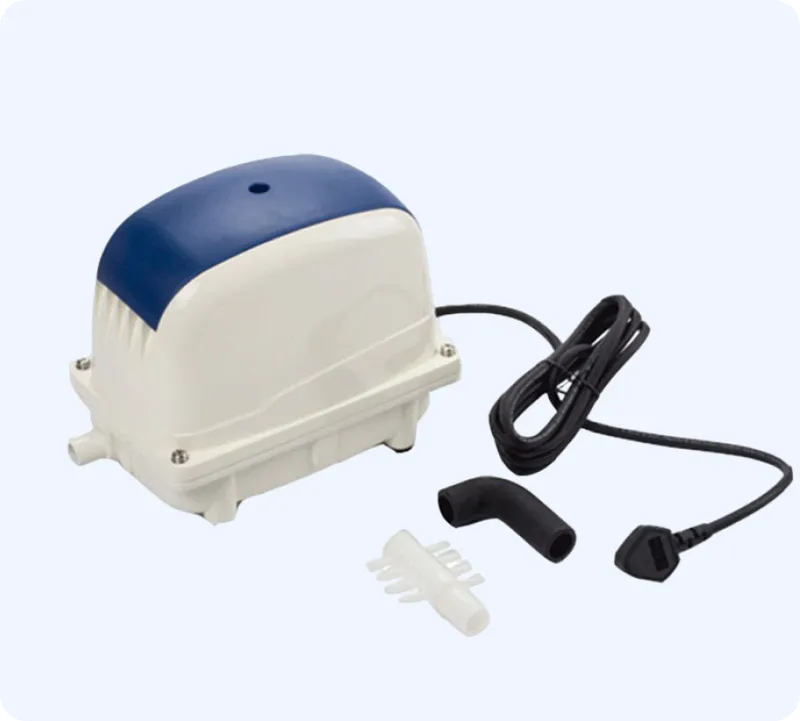

Аэраторы для пруда
Компрессор РА-250, 250 л/мин, 250 Вт, 0.02 Бар, супертихий
Цена и наличие
- 1 шт.799,02 BYN / шт.В наличии
Данные на 23.11.2026.
Характеристики
- Бренд
- Jebao
- Тип аэратора
- мембранный
- Производительность
- 250 л/мин
- Энергопотребление
- 250 Вт
- Давление
- 0.02 Бар
- Производительность.(L/min)
- 250
- Энергопотребление(w)
- 250 Вт
- Давление Mpa
- 0.02
- Мpa
- 0.055
- Уровень шума
- 47
- Вес
- 9.0
- Напряжение
- 220-240V 50Hz 60Hz
- Размеры ДxШxВ(mm)
- 345×230×245
- Страна производитель
- Китай
Описание
Jecod PA-250 – это высококачественный внешний фильтр, специально разработанный для обеспечения чистой и здоровой водной среды в вашем пруду.
Компрессор для пруда РА-250, 250 л/мин, 0,055 mpa, 250 вт, 220В, Супертихий, профессиональный, для пруда, септиков, аквадизайна Jecod PA-250 – это высокопроизводительный мембранный компрессор из серии Jecod, предназначенный для обогащения воды кислородом. Эффективное решение для решения проблемы нехватки кислорода в водоемах, предотвращая цветение воды и замор рыбы. Мембранный компрессор Jebao PA-250 нашел применение в различных сферах: Аквариумистика. Поддержание оптимального уровня кислорода для рыб и растений. Септики. Обогащение сточных вод кислородом для биологической обработки. Декоративные пруды и озера. Поддержание баланса кислорода для здоровья водной экосистемы. Рыбные хозяйства и установки водоподготовки. Обеспечение кислородом в водных системах. Торговые павильоны с живой рыбой. Создание комфортных условий для живых организмов при продаже.
Преимущества
Супертихий; Профессиональный; Для пруда, септиков, аквадизайна. Компактный вес, высокая производительность, качественные фильтры, влагозащищенная электрическая часть и защита от перегрева – лишь некоторые из множества преимуществ, которые характеризуют данное устройство. Приобретайте компрессор PA-250 в нашем магазине и вкладывайте деньги в разумное и обдуманное решение!
Дополнительно
Евровилка; Качественная окраска и запчасти; Толстая обмотка и большая устойчивость к перепадам напряжения; Долгий срок службы и низкое энергопотребление; Компрессор подойдет для пруда в зимний период (желательно не выключая), а летом без попадания прямых солнечных лучей; Компрессор рассчитан на круглосуточный, безостановочный режим работы; Температурный рабочий диапазон составляет примерно 45-55°C. Jecod PA-250 – это надежное решение для обогащения воды кислородом в различных сценариях, от аквариумов до водных хозяйств. Его эффективность, низкое энергопотребление и высокое качество сборки делают его незаменимым инструментом для поддержания здоровья водной среды.